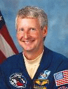

Lyndon B. Johnson Space Center
Houston, Texas 77058
|
National Aeronautics and Space Administration Lyndon B. Johnson Space Center Houston, Texas 77058 |
 |
Biographical Data |
||
Steven A. Hawley (Ph.D.)
NASA ASTRONAUT (FORMER)
PERSONAL DATA: Born December 12, 1951, in Ottawa, Kansas, but considers Salina, Kansas, to be his hometown. Married to the former Eileen M. Keegan of Redondo Beach, California. He enjoys golf and watching baseball. His parents, Dr. and Mrs. Bernard Hawley, reside in Surprise, Arizona.
EDUCATION: Graduated from Salina (Central) High School, Salina, Kansas, in 1969; received bachelor of arts degrees in physics and astronomy (graduating with highest distinction) from the University of Kansas in 1973, and a doctor of philosophy in astronomy and astrophysics from the University of California in 1977.
ORGANIZATIONS: Member of the American Astronomical Society, the Astronomical Society of the Pacific, the American Institute of Aeronautics and Astronautics, the Association of Space Explorers, the American Astronautical Association, Sigma Pi Sigma, and Phi Beta Kappa.
SPECIAL HONORS: Evans Foundation Scholarship, 1970; University of Kansas Honor Scholarship, 1970; Summerfield Scholarship, 1970-1973; Veta B. Lear Award, 1970; Stranathan Award, 1972; Outstanding Physics Major Award, 1973; University of California Regents Fellowship, 1974; Group Achievement Award for software testing at the Shuttle Avionics Integration Laboratory, 1981; NASA Outstanding Performance Award, 1981; NASA Superior Performance Award, 1981; Group Achievement Award for Second Orbiter Test and Checkout at Kennedy Space Center, 1982; Quality Increase, 1982; NASA Space Flight Medal (1984, 1986, 1990, 1997, 1999); Group Achievement Award for JSC Strategic Planning, 1987; NASA Exceptional Service Medal (1988, 1991); Special Achievement Award, 1988; Exceptional Service Medal for Return to Flight, 1988; Outstanding Leadership Medal, 1990; Special Achievement Award, 1990; Haley Flight Achievement Award, 1991; Kansan of the Year Award, 1992; Group Achievement Award for ESIG 3000 Integration Project, 1994; Presidential Rank Award (1994, 1999); Group Achievement Award for Space Shuttle Program Functional Workforce Review, 1995; Group Achievement Award for SFOC Contract Acquisition, 1997; Kansas Aviation Hall of Fame, 1997; Kansas University Distinguished Service Citation, 1998; NASA Distinguished Service Medal (1998, 2000); Aviation Week and Space Technology Laurel Citation for Space, 1998, V.M. Komarov Diploma from the FAI (Federation Aeronautique Internationale) (1998, 2000, Alumni Distinguished Achievement Award (Univesity of Kansas), 2007, Astronaut Hall of Fame Inductee, 2007.
EXPERIENCE: Hawley attended the University of Kansas, majoring in physics and astronomy. He spent three summers employed as a research assistant: 1972 at the U.S. Naval Observatory in Washington, D.C., and 1973 and 1974 at the National Radio Astronomy Observatory in Green Bank, West Virginia. He attended graduate school at Lick Observatory, University of California, Santa Cruz. His research involved spectrophotometry of gaseous nebulae and emission-line galaxies with particular emphasis on chemical abundance determinations for these objects. The results of his research have been published in major astronomical journals. Prior to his selection by NASA in 1978, Hawley was a post-doctoral research associate at Cerro Tololo Inter-American Observatory in La Serena, Chile.
NASA EXPERIENCE: Dr. Hawley was selected as a NASA astronaut in January 1978. Prior to STS-1, he served as a simulator pilot for software checkout at the Shuttle Avionics Integration Laboratory (SAIL). For STS-2, STS-3, and STS-4, he was a member of the astronaut support crew at Kennedy Space Center, Florida, for Orbiter test and checkout, and also served as prime close-out crewman for STS-3 and STS-4. During 1984-1985, he was Technical Assistant to the Director, Flight Crew Operations. From 1987-1990, he was the Deputy Chief of the Astronaut Office. In June 1990, he left the Astronaut Office to assume the post of Associate Director of NASA’s Ames Research Center in California. In August 1992, he returned to the Johnson Space Center as Deputy Director of Flight Crew Operations. Dr. Hawley was returned to astronaut flight status in February 1996. He served on the second Hubble Space Telescope mission and returned to duty as Deputy Director, Flight Crew Operations. From October 2001 to November 2002, Dr. Hawley served as Director, Flight Crew Operations. From 2003 to 2004, Dr. Hawley also served as the First Chief Astronaut for the NASA Engineering and Safety Center. From 2002 to 2008 he served as Director, Astromaterials Research and Exploration Science Directorate. Dr. Hawley was responsible for directing a scientific organization conducting research in planetary and space science. The primary functions of the organization included astromaterials acquisition and curation, astromaterials research, and human exploration science. A veteran of five space flights (STS-41D in 1984, STS-61C in 1986, STS-31 in 1990, STS-82 in 1997 and STS-93 in 1999), Dr. Hawley logged 32 days in space. Dr. Hawley retired from NASA in May 2008.
SPACE FLIGHT EXPERIENCE: Dr. Hawley has logged a total of 770 hours and 27 minutes in five space flights. He served as a mission specialist on STS-41D in 1984, STS-61C in 1986, STS-31 in 1990, STS-82 in 1997 and STS-93 in 1999.
STS-41D Discovery (August 30 to September 5, 1984) was launched from the Kennedy Space Center, Florida, and returned to land at Edwards Air Force Base, California. This was the maiden flight of the Space Shuttle Discovery. During the 7-day mission the crew successfully activated the OAST-1 solar cell wing experiment, deployed the SBS-D, SYNCOM IV-2, and TELSTAR 3-C satellites, operated the CFES-III experiment, the student crystal growth experiment, as well as photography experiments using the IMAX motion picture camera. The mission was completed in 96 orbits of the Earth in 144 hours and 57 minutes.
STS-61C Columbia (January 12-18, 1986) was launched from the Kennedy Space Center, Florida, and returned to a night landing at Edwards Air Force Base, California. During the 6-day flight the crew deployed the SATCOM KU satellite and conducted experiments in astrophysics and materials processing. Mission duration was 146 hours and 03 minutes.
STS-31 Discovery (April 24-29, 1990) was launched from the Kennedy Space Center in Florida, and also returned to land at Edwards Air Force Base, California. During the 5-day mission, the crew deployed the Hubble Space Telescope, and conducted a variety of middeck experiments involving the study of protein crystal growth, polymer membrane processing, and the effects of weightlessness and magnetic fields on an ion arc. They also operated a variety of cameras, including both the IMAX in-cabin and cargo bay cameras, for Earth observations from their record-setting altitude of 380 miles. The mission was completed in 76 orbits of the earth in 121 hours.
STS-82 Discovery (February 11-21, 1997) the second Hubble Space Telescope (HST) maintenance mission, was launched at night and returned to a night landing at Kennedy Space Center, Florida. During the flight, Dr. Hawley’s primary role was to operate the Shuttle’s 50-foot robot arm to retrieve and redeploy the HST following completion of upgrades and repairs. Dr. Hawley also operated the robot arm during five space walks in which two teams installed two new spectrometers and eight replacement instruments. They also replaced insulation patches over three compartments containing key data processing, electronics and scientific instrument telemetry packages. HST was then redeployed and boosted to a higher orbit. The flight was completed in 149 orbits covering 3.8 million miles in 9 days, 23 hours, 37 minutes.
STS-93 Columbia (July 22-27, 1999) was launched from the Kennedy Space Center on a 5-day mission returning to KSC for the 12th night landing in the Shuttle Program’s history. Dr. Hawley served as Columbia’s flight engineer. The primary mission objective was the successful deployment of the Chandra X-ray Observatory, the third of NASA’s Great Observatories after Hubble Space Telescope and the Compton Gamma Ray Observatory. Dr. Hawley also served as the primary operator of a second telescope carried in the crew module which was used for several days to make broadband ultraviolet observations of a variety of solar system objects. The mission completed 79 orbits in 4 days, 22 hours, and 50 minutes.
Dr. Hawley is a Professor of Physics and Astronomy at the University of Kansas.
AUGUST 2008
This is the only version available from NASA. Updates must be sought direct from the above named individual.